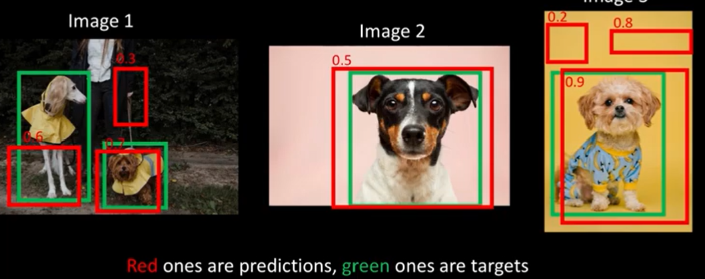
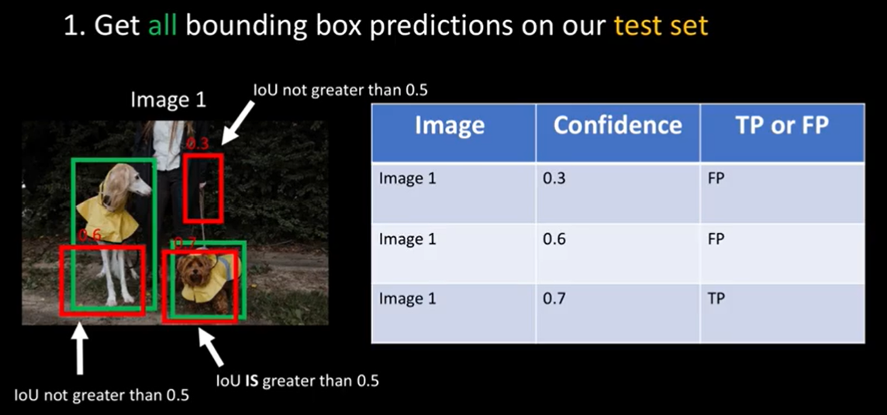
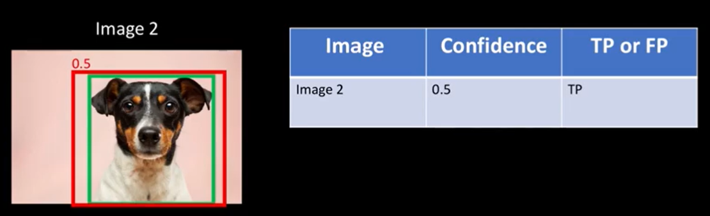
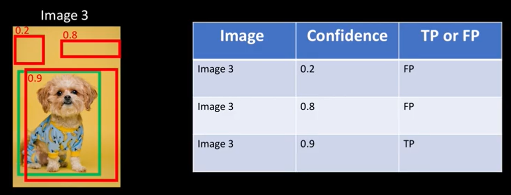
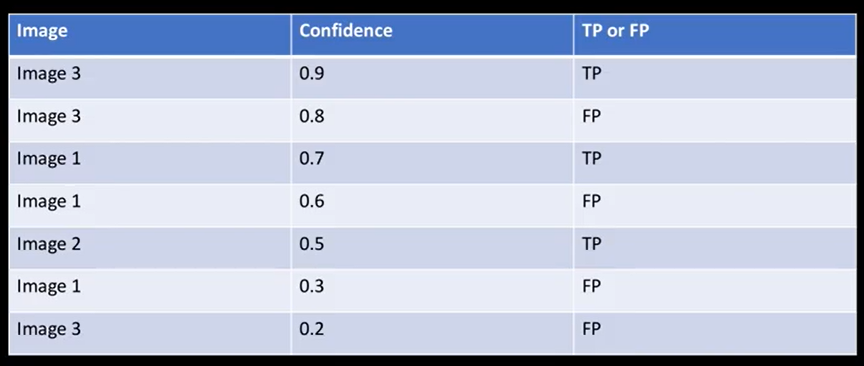
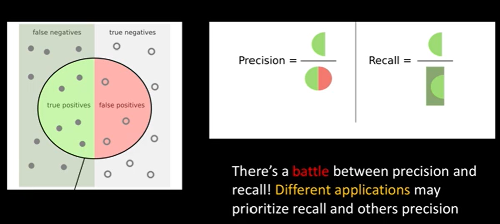
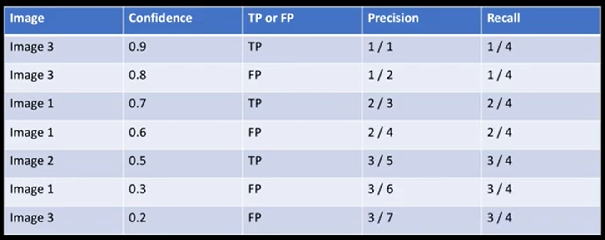
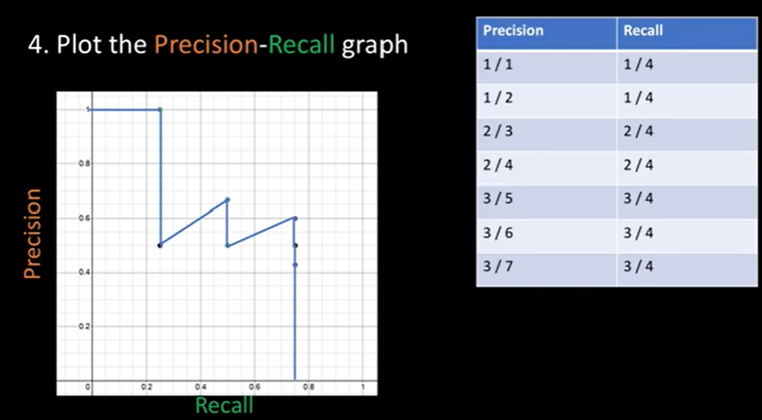
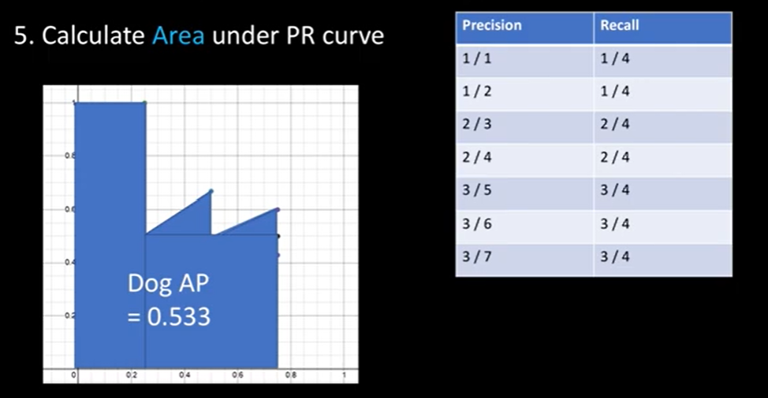
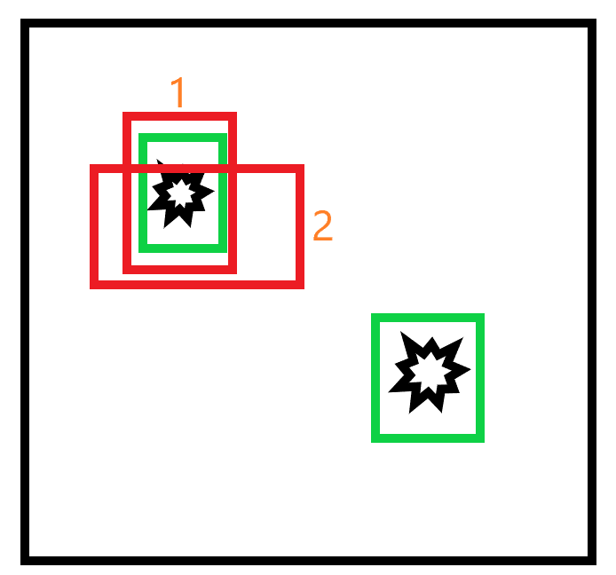

目标检测中的mAP-代码实现
mAP
mAP，全称为mean Average Precision，在目标检测任务中被用于衡量检测器的好坏。本文第一部分讲解mAP的概念以及计算过程，第二部分专注于用代码实现mAP的计算。
在做目标检测时，每个类别对应有一个AP，全部类别的AP求平均就是mAP。
AP是P-R曲线下方的面积。
P-R曲线的横轴是Recall，纵轴是Precision。
因此，欲计算mAP，得先计算每个类别对应的AP，进一步，得先计算每个类别对应的Recall和Precision。
下面正文开始~
一、计算某个类别对应的AP
1. 获取测试集上所有预测的bbox的结果(TP or FP)
这里，假设预测得到的bbox已经做过NMS处理，如果不清楚什么是NMS，请查看这篇文章。

GT总数(绿色框)为4，而红色框是预测得到的，红色数字表示置信度(confidence)。
接下来需要计算每张图片中的每一个红色预测框与其附近的绿色真实框的IoU，当IoU大于预先设定的IoU阈值时，设置该预测框为TP，否则设置为FP。
之所以使用TP和FP，是因为我们感兴趣的是 预测框的位置是否接近真实框的位置 (接近程度用两者的IoU来衡量)，接近的(IoU大于某个阈值)就视为正例(Positive，简写为P)。
对第一张图片：

对第二张图片：

对第三张图片：

2. 按照置信度从大到小排序

3. 计算Precision和Recall

即：
$$Precision=\frac{TP}{TP+FP}$$
$$Recall=\frac{TP}{TP+FN}$$
而P-R曲线由一系列的点(Recall,Precision)连接而成，因此需要若干这样的点，那么如何获取这些点呢？
Recall和Precision的计算公式已经在上面写出了。
其中，$TP+FN$就是全部绿色真实框的个数(即：GT总数)，这是恒定不变的。
而$TP$和$FP$是动态变化的，这一点可以通过类比来理解。在普通的分类任务中，通过设置不同的阈值，可以获取多个不同的分类结果，这些分类结果对应不同的混淆矩阵，据此可以获得多个不同的(Recall, Precision)，它们构成了P-R曲线上的一个个点。而在目标检测任务中，置信度充当了上述阈值的角色，不同的置信度下，可获取不同的(Recall,Precision)，于是就可以绘制P-R曲线，进一步计算AP(P-R曲线下方面积)了。
这里，将置信度从大到小排序，可以方便的通过累加方式统计不同置信度下的TP和FP。
不同置信度下的Precision和Recall统计如下：

其中，TP+FN=4，即总GT数。
第一行，累加TP=1，累加FP=0，$Precision=\frac{TP}{TP+FP}=\frac1{1+0}$，$Recall=\frac{TP}{TP+FN}=\frac14$
第二行，累加TP=1，累加FP=1，$Precision=\frac{TP}{TP+FP}=\frac1{1+1}$，$Recall=\frac{TP}{TP+FN}=\frac14$
第三行，累加TP=2，累加FP=1，$Precision=\frac{TP}{TP+FP}=\frac2{2+1}$，$Recall=\frac{TP}{TP+FN}=\frac24$
同理可计算后续所有行。
得到这些点之后，就可以绘制P-R曲线了。
4. 绘制P-R曲线

5. 计算P-R曲线下方面积，即AP

二、计算所有类别的AP
对每一个类别，都执行(一)中的步骤，得到每个类别的AP。
三、计算mAP
将(二)中计算得到的AP求平均，就得到了当前IoU阈值下的mAP。
以上仅仅是对于某一个特定的IoU阈值，我们还需要尝试不同的IoU阈值，然后再取平均【sum(每一个IoU阈值下得到的mAP)/不同IoU阈值的个数】，得到最终的mAP。
PyTorch实现mAP
定义计算mAP的函数mean_average_precision，该函数共4个参数。其中，pred_bboxes 代表所有预测框，true_boxes代表所有真实框，iou_threshold代表设定的IoU阈值，num_classes是总类别数。
pred_bboxes 和true_boxes都包含多条数据。
pred_bboxes中的每条数据格式如下：
1 | [train_idx,class_pred,prob_score,x1,y1,x2,y2] |
train_idx：指示图片编号，用于区分不同的图片
class_pred：预测的类别
prob_score：置信度
(x1,y1)：bbox左上角坐标（可能已经归一化）
(x2,y2)：bbox右下角坐标（可能已经归一化）
true_boxes中每条数据的格式与之类似，只不过它是确定的（GT）。
注意：为了描述方便，接下来会将上面所说的”一条数据”直接说成是”一个(真实/预测)框”，这是不准确的，因为这一条数据除了包含框的位置信息外，还包含上面讲到的train_idx等信息。
开始写代码：
1 | def mean_average_precision(pred_bboxes,true_boxes,iou_threshold,num_classes=20): |
我们需要分别求解每个类别的AP，然后对所有类别的AP求平均就能得到mAP，因此接下来将专注于求解一个类别的AP。继续写代码：
1 | #对于每一个类别 |
上面的代码将预测为该类别的框存储在detections列表中，将本身就是该类别的真实框存储在ground_truths列表中。
继续写代码：
1 | amount_bboxes=Counter(gt[0] for gt in ground_truths) |
第一行代码用于统计每一张图片中真实框的个数，gt[0]是train_idx，它指示了用于区分每张图片的一个编号。
举个栗子：
1 | 假设： |
后面的代码改变字典的value，继续上面的栗子，改变后结果如下：
1 | amount_bboxes={0:torch.tensor([0,0,0]),1:torch.tensor([0,0,0,0,0])} |
刚开始，amout_bboxes包含了每张图片中真实框的个数，它是一个字典，其中key为图片编号，value为该图片包含的真实框的个数；之后，将真实框的个数用全0向量来替代，有几个真实框，全0向量就包含几个0。
比如这里，编号为0的图片中共包含3个真实框，编号为1的图片中共包含5个真实框。
继续写代码：
1 | #将预测框按照置信度从大到小排序 |
按照之前所讲，把预测框按照置信度从大到小进行排序，并初始化TP和FP。由于每一个预测框对应一个TP或者FP，而当前类别下总共有 len(detections)个预测框，因此初始化为长度为len(detections)的全0向量。
继续写代码：
1 | #对于每个预测框，先找到它所在图片中的所有真实框，然后计算预测框与每一个真实框之间的IoU，大于IoU阈值且该真实框没有与其他预测框匹配，则置该预测框的预测结果为TP，否则为FP |
这段代码完成了IoU的计算与比较，并由此确定每一个预测框是TP还是FP。
首先，找到当前预测框detection所在图片中的所有真实框，存储在ground_truth_img中，因为某一个预测框只能与该预测框所在图片内的真实框之间计算IoU。
amount_bboxes[detection[0]][best_gt_idx]用于表示编号（train_idx）为detection[0]的图片中，第best_gt_idx个真实框是否已经与某一个预测框匹配（两者IoU大于设定的IoU阈值），如果是，则置为1，否则置0。初始化时置为全零向量，表示都还未匹配。
为什么需要这样做？举个例子：下面的绿色框为真实框，红色框为预测框。假设1号预测框已经与左上角的绿色框匹配，那么对于2号预测框来说，它会分别计算自己与左上角以及右下角的两个真实框之间的IoU，虽然结果是它与左上角的真实框之间的IoU更大，但是左上角的真实框已经与1号预测框匹配，因此2号预测框就无法再与左上角的真实框进行匹配了。上述代码保证了这一点。

对了，在计算IoU时调用了insert_over_union函数，它是我们之前实现过的，这里直接搬过来了，忘记的可以查看这篇文章。
继续写代码，接下来的代码就没那么难理解了：
1 | TP_cumsum=torch.cumsum(TP,dim=0) |
计算每个置信度下的TP和FP，然后套公式计算每个置信度下的Recall和Precision，最后使用数值积分(torch.trapz)算P-R曲线下方的面积，即当前类别对应的AP。
最后，退出for循环，就得到了每个类别对应的AP，返回均值即可：
1 | return sum(average_precisions)/len(average_precisions) |
这样就得到了当前IoU_threshold下的mAP。
正如前面所说，你还可以更换不同的IoU_threshold，重复调用上述函数进行计算，每次都将结果保存下来，最后取它们的均值，就得到了最终的mAP。
完整代码如下：
1 | import torch |
参考：